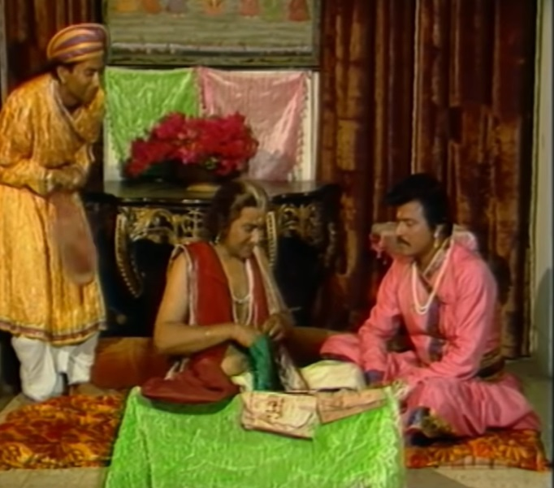
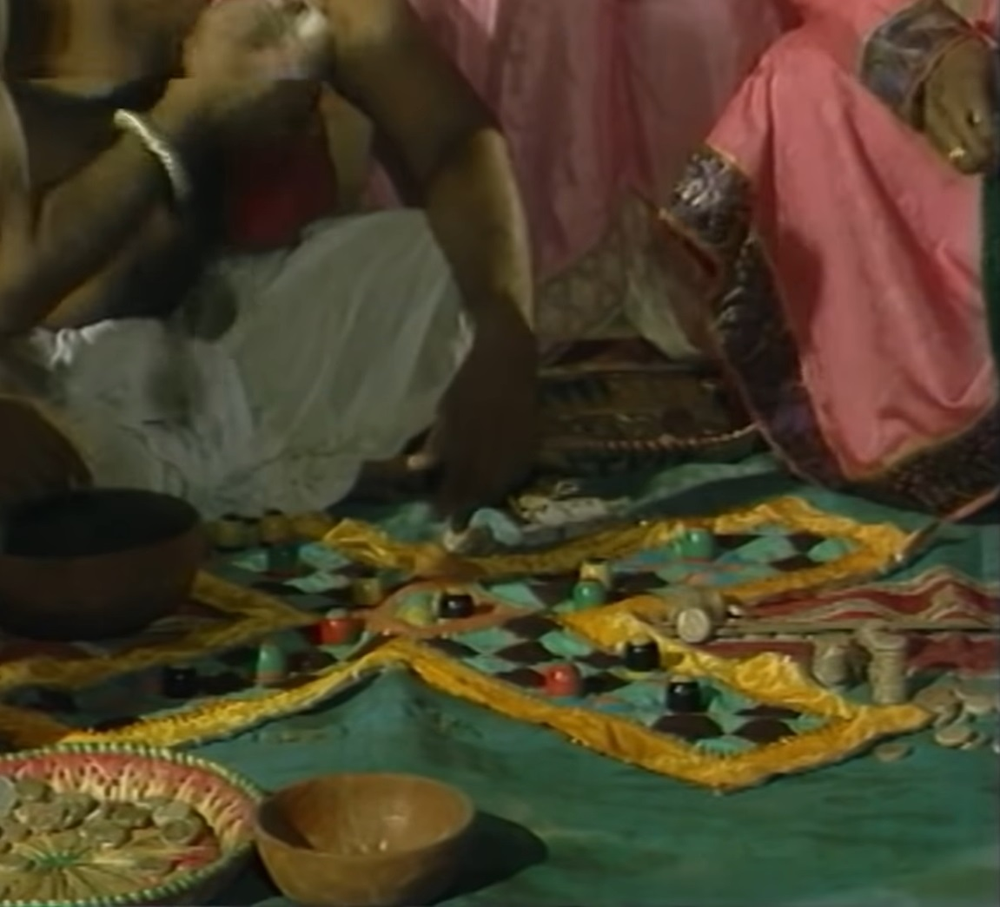
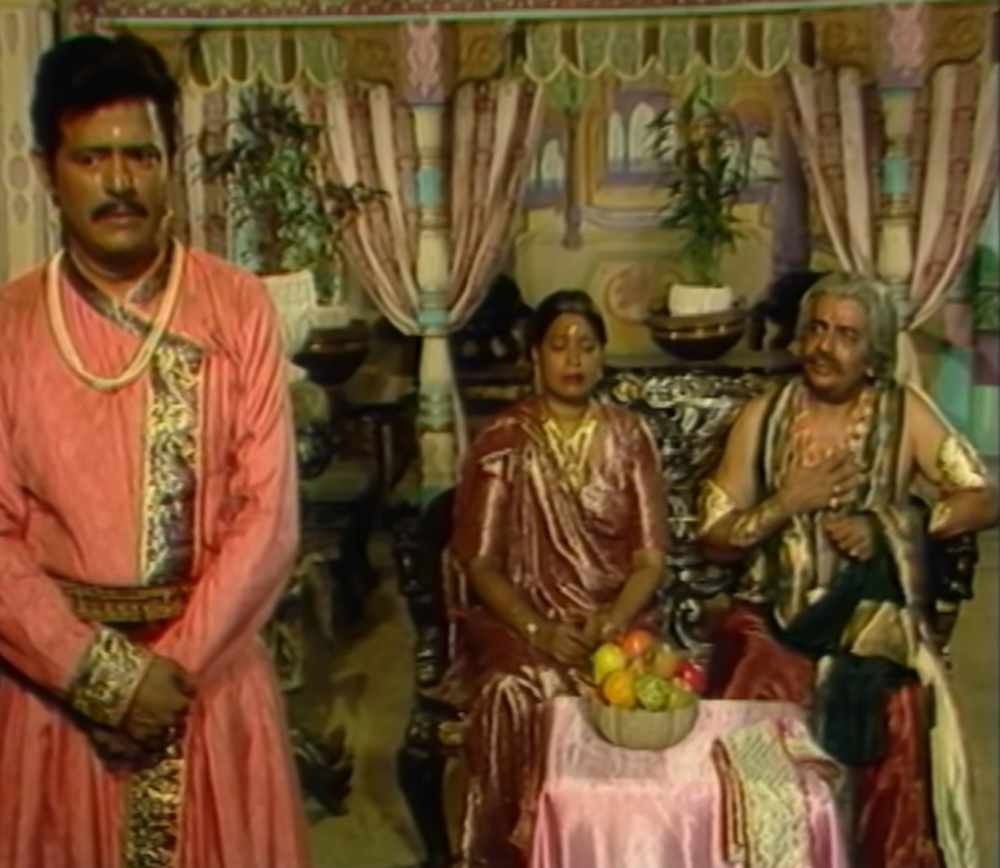
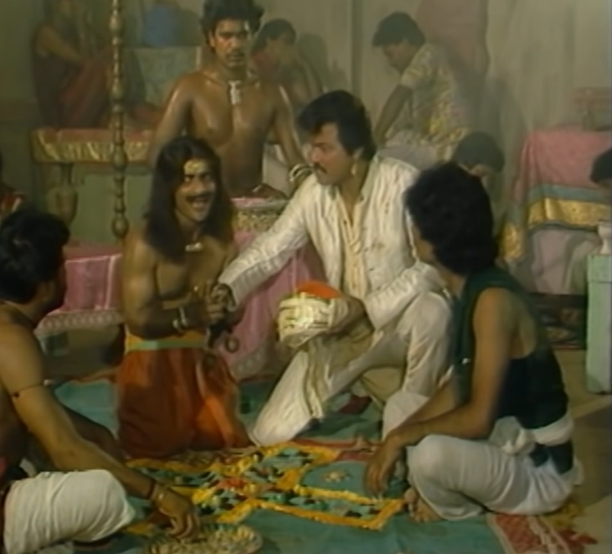

|  |  |
|  |  |
Vikram catches Betal again and takes him away and Betal again tells him a story. Listens. There lived a Seth in a town named Ilkor. He had no children. After much begging, in his old age he got a son whom he pampered. Spoiled in love and his company also becomes bad till he goes to school. Had become addicted to lying and gambling. Whenever he had any complaint, Mother would cover up everything. Similarly, when Seth's son Gopu grew up, Seth Told him that now he should start helping me in my business. seth him 100 He gives coins and sends them to the market and says that last year one bag was worth one coin. Used to get grains, this time the crop has also been good, so Seth's son says that he He will make a very good deal and get money from the market, but he will directly take the pieces from home. Goes to gamble and loses all the money. Gopu returns to his mother He comes closer and makes them emotional and takes another 200 pieces and also gambles away that money. I lose. After some time both Seth and Sethani die. But even then Gopu's habits do not change and after the death of his parents he continues to He turns his home into a gambling den and slowly he loses all his wealth, land and house. Goes and after being evicted from home, he was wandering around and thinking about If somehow he gets some money then he will get back all his lost money. He remembers that a close friend of his father lives in Chandrapur Nagar. He goes to them to ask for money and tells them a false story. Gopu A friend of his father takes him under his shelter. Seth for his daughter Ratna He likes Gopu and gets both of them married. after getting married Gopu thinks that he had gone there to ask for money but instead his wife fell in love with him. Now he was worried about where he would take her. There is a terrible fear in Gopu's mind. It seems that he was so engrossed in gambling that he lost all Ratna's jewellery. He gets her taken out on some pretext and later pushes her into the well. Gopu He takes all Ratna's jewelery and goes gambling and loses all the jewelery again. Even after falling into a well, Ratna does not kill herself; she calls out for help. So a man passing by hears his voice and throws him out. Ratna at her home She comes back and does not tell her parents what Gopu did, a story on the contrary. On the way she was attacked by bandits and all her jewelery was taken away. After robbing him, they pushed him into the well and took Gopu with them. Gopu again Darbadar wanders away and again creates a new false story of going to his in-laws. He thinks that if I tell him that his wife has given birth to his grandson, then he Will fill his bag with money. With this intention he goes to his in-laws' house and opens the door. But he is surprised to see Ratna. Ratna looks at Gopu and says that she Don't worry about anything, he didn't tell his parents anything about what he did. On the contrary, he has hidden everything and has asked Gopu to hide everything too. Gives. Ratna takes Gopu inside and feeds him. in ratna The parents again give more jewelery to their daughter, who then stings Gopu. There is not the slightest guilt, on the contrary, his greed awakens again and at night he When he starts running away with Ratna's jewellery, Ratna sees him and stops him. So Gopu kills him and runs away. Now Betal asks Vikram to tell Ratna. Did he do right or wrong by keeping Gopu's mistake silent? King Vikram says that Ratna has done wrong by hiding Gopu's mistake because the man who bought the jewelery It was not right to give that person a second chance because he had thrown him in the well. But he made a mistake by giving her a chance, which resulted in him giving her his vow. Had to pay. Hearing the king's answer, Betel flies again and returns to its tree. But he goes and hangs himself.